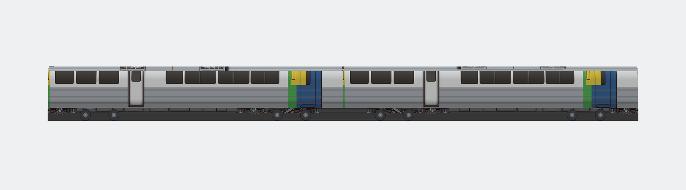
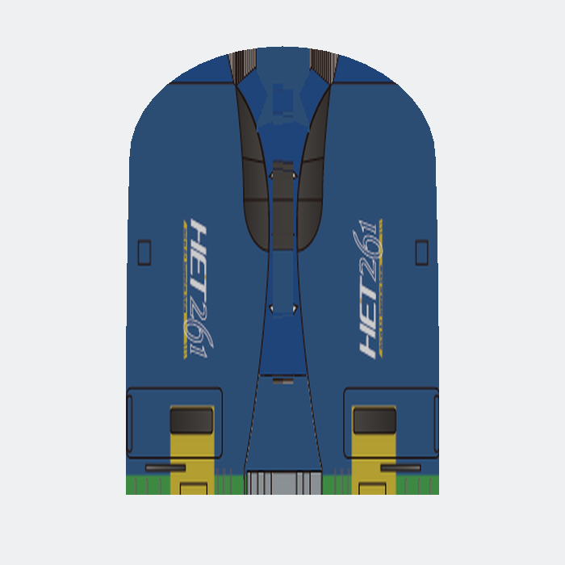
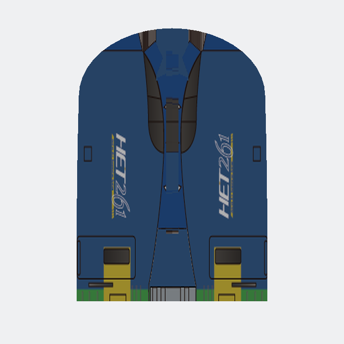

1. JR北海道キハ261系 0番台 jr-hokkaido-kiha261
映射线路：宗谷本線、石北本線。2 辆编组（キハ261 + キハ260）。返工提交 c196494（models-pipeline）。第 50 批审核页（batch50 #38）图片已同步更新为返工后版本。





只放返工的车：JR北海道キハ261系 0番台（2 辆编组）。分支 models-pipeline，提交 c196494。
用户反馈（2026-11-26 22:29）：“编组的时候司机室没有面朝两端”。诊断：两车单看都对（car1 司机室在 z=0 端、car2 司机室在 z=21.67 端），但按原 consist [car1, car2] 编组后，两端外侧都是贯通端、两个司机室在中间面对面——审核图与站内模拟一致复现。另查出侧面贴图镜像缺陷：蓝色司机端侧面（黄乘务员门）在每辆车的一侧落在司机端、另一侧落在贯通端。
返工：① consist.json 车序对调为 [car2, car1]（不加 flip；站内首尾对调后两端仍为司机室朝外，审核与站内一致）；② car1 的 −X 面、car2 的 +X 面侧面贴图 U 镜像（u→1−u），蓝色司机端侧面回到司机端；③ 顺手修正名字笔误 0番代→0番台。位置、法线、三角、材质、贴图与涂装均未动。两端验收图（end_plusZ / end_minusZ）均为蓝色司机面。
映射线路：宗谷本線、石北本線。2 辆编组（キハ261 + キハ260）。返工提交 c196494（models-pipeline）。第 50 批审核页（batch50 #38）图片已同步更新为返工后版本。


